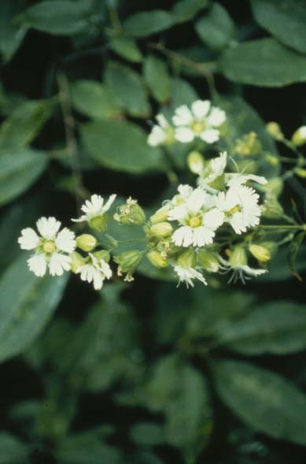
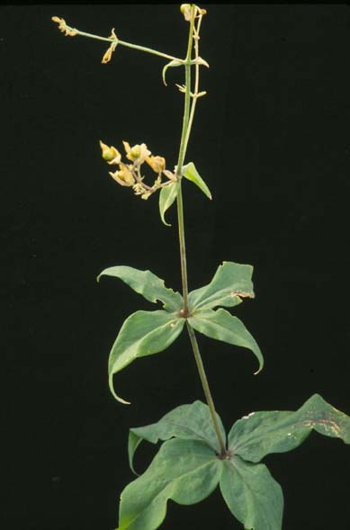

Silene Stellata
Family: Caryophyllaceae
Starry Campion
Swink/Wilhelm # 6

Click to view larger photo
FLOWERING: July - September
SEED TIMING: August - September
HABITAT: Savannas
DIAGNOSTIC FEATURES: 2 - 3 feet tall. Deeply fringed, 5-petaled white flowers clustered atop tall, slender stalks, with leaves mostly in whorls of 4. Leaves are 1 to 4 inches long, lanceolate, smooth.
TO PICK: Each flower forms a green capsule containing many small seeds. When ripe, the capsules will split open at the end and the seeds will fall out gradually. Pick when capsules have turned light tan in color and some have already opened.